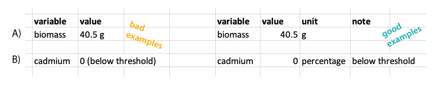
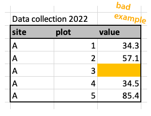

3 Design spreadsheets
Spreadsheets are an important tool to enter and store data and used in every day life in science. As useful as they are, there are also many traps and problems with spreadsheets. Scientists have lost data, because of spreadsheets such as Excel convert names to dates. Being aware of such issues is key when working with spreadsheets.
In this chapter, we will show you best practice to design and organize tidy spreadsheets that are readable to humans and machines. We show how to design spreadsheets that makes data collection easy, that are less error-prone, work well in downstream reproducible workflows and are easy to share with others. We will often refer to downstream processing in R, but most of the recommendations given here, are applicable to any data analysis software. We recommend to apply these practices to datasets from the start, which should prevent tedious editing later. Also, we do not recommend to use spreadsheets for data analysis or visualization, because it is not reproducible.
The content of this page is heavily adapted from Broman and Woo (2018).
3.1 Paper or digital data entry
There are two ways data is collected. Data that is recorded from a machine and automatically stored. If you have the possibility for that, it is always recommended to make use of digital data collection. It can reduce errors. Alternatively, data is collected manually. There are multiple ways of collecting data by hand such as, on paper, digital on a notepad/phone, or recordings.
Each of these methods have their advantages and disadvantages. If you are collecting data in remote place with harsh weather conditions, paper might be your only solution. Note that there exists rite in the rain paper. Digital data entry saves you the step of digitizing the data and therefore sources of errors. In addition, you can build in data validation for example drop down menus or a function that checks for the right range of values. This can be very useful for avoiding errors.
3.2 Content
What information should your spreadsheet contain? This is not en exhaustive list, but gives guidance on useful information to record:
- ID (unique ID for each observation, individual)
- Date, time, observation number
- Location: region/site
- Experimental design: block, plot, replicate, number of observation, treatments
- Organism: species/population/genet
- response variable(s)
- predictors
- recorder/scribe
- other observations: weather
- notes
3.3 Data validation tools
Data validation is a way to reduce errors in the data and can be built in when collecting or digitizing data.
For example you can:
- set ranges for valid numbers (e.g. only positive, range between two numbers)
- only allow whole numbers or decimals
- add a drop down menus for categorical data
- define the length of text (e.g. only 8 characters)
- define data types (e.g. to avoid conversion to dates)
3.4 Rectangular spreadsheet
Spreadsheets should be rectangular. Best practice is to make spreadsheets completely rectangular. They should not have empty cells, rows or columns, titles or double headers.
It is however common to leave some rows/columns and cells empty (Figure 3.2). Also adding a title to a spreadsheet is often done. It is not best practice, but also not a big problem for the downstream processing. Contrary, having two headers with different information is more difficult to process later.

Sometimes, two datasets are combined in one spreadsheet. For example, table Figure 3.3 shows an example of pollinator observation data, which includes observations about wind. The spreadsheet also contains a separate table on the right side, showing the scale for wind. It can be useful to have the two tables in the same file, for example when entering the data. But this will be far more complicated than needed when importing the data. Here we recommend to keep these two tables in separate spreadsheets.

3.5 Long or wide format
Datasets can be long or wide and there is often a debate which of these formats are better (Figure 3.4). We do not have a strong opinion on this. As long as the general rules (see above and below) are followed, this does not matter very much. Many analysis require a long format, but for others (e.g. ordinations) a wide format is needed. This means that data often needs to be reshaped from long to wide and vice versa. And this is not very difficult (see reshape section).

3.6 Single value per cell
Tidy spreadsheets follow the following rules:
- each variable should be one specific column,
- each observation should be one specific row,
- each cell at the intersection of a row and a column contains a single value.
Importantly, put only one value per cell (Figure 3.2).
Sometimes values are entered with their units, such as 42 g in one cell (Figure 3.5). It is better to separate the value and the unit into two columns.
Another common mistake is to add notes to a column (Figure 3.5). For example if a value is 0 because it is below the detection value, you could write 0 (below threshold). We recommend to only write the number in the first column and add notes on the value in a separate column called notes.

3.7 Consistency
Consistency is key. There are many ways of designing a spreadsheet, and there is not always a right or a wrong. Find what works for you and stick to it.
Be consistent for categorical variables, for example use the same spelling and not variations like: female, Female, F. Latin species names is a common problem and where typos happen very easily (Figure 3.6).

If you have multiple files or datasets from the same experiment, be consistent with variable names and do not use variations like: site, location, siteID. This will make it more difficult to join datasets downstream.
Be consistent with missing values. Do not use a mix of leaving the cell blank, NA and making notes like value missing. Also see section below for more details on missing values.
Be consistent with file names.
Be consistent with dates. Dates are particularly tricky and get some special attention here (see below). Preferably, use the ISO standard yyyy-mm-dd, for example 2025-12-07.
Be consistent in notes. We recommend to have a column with notes, which can be used to write down notes about the data or a specific value. For example, why a observation is missing, or something that was unusual during data collection etc. But again, be consistent when making these notes, because it will be easier to make use of the notes downstream. Using different versions for the same information like gone, missing, vanished will make it difficult to quantify how many times a specific problem occured.
Avoid space in cells before ” female” or after “female ”.
3.8 Meaningful naming
Use good and meaningful names. What do we mean by this? Variable names should be easy to use in downstream data analysis. In addition, variable names should be meaningful which means that the name should explain the variable to some extent.
Avoid spaces in names, and rather use underscore (_) or hyphen (-). There are different styles (see Figure 3.7) and there are debates about which one is preferable. The truth is, it does not really matter, choose one and stick with it. On a second thought, do not use the kebab-case.

Do not use special characters other than underscore and hyphen in names. For example: +, %, &, /, ?, !, $, ,, #, @. Note that letters that might be common for you, for example å, æ and ø, are not so common in other countries and R does not deal very well with them. Instead of nedbør use nedbor. This will make you life a lot easier.
Use concise and meaningful names (Figure 3.8). The name should be short, but long enough to give a meaning. For example community_composition_2022.csv.

If you want to know more about this, we have created a tutorial on naming conventions.
3.8.1 janitor
One way to deal with inconsistent variable names is to use the janitor package. The function clean_names() will convert all variables names to a consistent format with snake_case (default). Other formats are also available. In addition it will turn % sign into percent and # to number.
Let’s look at a dataframe with ugly variable names. And then clean the names.
Attaching package: 'janitor'The following objects are masked from 'package:stats':
chisq.test, fisher.testdat# A tibble: 1 × 3
siteID `measurment 2022` `cover%`
<chr> <dbl> <dbl>
1 A 1 32dat |>
clean_names()# A tibble: 1 × 3
site_id measurment_2022 cover_percent
<chr> <dbl> <dbl>
1 A 1 323.9 Standards
Use global data standards when available.
geographic locations
One example are geographic locations such as coordinates. They can be written in many different ways:
- Decimal degrees: 60.39299 5.32415
- DMS: 60°23’34.76” N 5°19’26.94” E
- UTM: 32V 297477 6700830
We recommend to use decimal degree (ISO 6709). For example the coordinates for Bergen (Norway) are 60.39299 °N and 5.32415 °E. There are some important rules to follow:
- Latitude comes before longitude.
- North latitude is positive and south latitude is negative.
- East longitude is positive and west longitude is negative.
If your coordinates are UTM that is also fine, but do not forget to report the zone (e.g. 32V).
When entering dates into spreadsheets, add each part in a separate column, meaning separate the degree north and east in two columns. For UTM use three columns.
dates
Another example are dates, that can also be written in many different ways:
- 3.1.2022
- 03/01/2200
- 01-03-2022
This can lead to confusion, especially when the placement of the month and day are switched (Figure 3.9).
We therefore strongly recommend to use the global standard ISO 8601 (Houston 1993) for dates, YYYY-MM-DD, such as 2025-12-07.

Another issue with dates is, that programs like Excel can turn names into dates. For example names like “Oct-4”, which is a name of a gene, will be turned into a date. Be aware of such problems and check your dataset for dates that are not supposed to be dates. This is a widely ackowledged problem and there are tools to deal with it, such as the web tool that autocorrects and updates misidentified gene names (Koh et al. 2022).
Try to avoid names that are turned into dates, or actively prevent it by adding a underscore or another character in front of such names. This can later be removed. Another way is to force a column in excel to be a date or to be text.
3.10 Missing data
We recommend to use NA for missing data and not to leave cells blank. R will automatically fill in NAs in blank cells. The problem with leaving missing data blank, is that there is no way of distinguishing between actual missing data and data that was forgotten to enter.
3.11 Point or comma as decimal separator
For the decimal separator it is common to use a point or a comma. There is no general agreement on which one to use, and there are different practises in different countries. For example in Norway, the comma is the standard setting in Excel.
Again, it does not matter what you use, but use it consistently. We have guidelines for how to import datasets with different formats (see import chapter).
Importantly, do not use a point, when Excel is expecting a comma, which can cause problems when importing the data to R. You can change the settings in Excel.
3.12 No manipulation or calculations
We strongly recommend to use datasheets only for data entry and storage. During data entry, the content of the spreadsheet can still be changed to reflect the paper version of the data or to make it consistent. But at some point we suggest to stop data manipulation by hand. From that point, data manipulation is done by code.
This is because any manipulation done by hand in Excel, cannot be reversed (at least once the document is saved and closed). Also, if you do a lot of manipulation in Excel, you won’t remember what has been done. Standard excel does not have track change to allow you to go back to older versions. In contrast, if data manipulation is done code-based, all manipulation can be changed and reversed.
For example, if you delete a column in Excel, save the document and leave the program. And the next day you realize that this was a mistake, it is not possible to retrieve this column. However if you leave the data file untouched, and do the manipulation in R, you can import the data again, run the code and just delete the command that was wrong.
We also do not recommend that you make calculations or summaries in your spreadsheet. Better practice is to use R for this, because it is reproducible.
3.13 No formatting
It’s common to format tables, by for example using colours, or bold font. That is fine, as long as the formatting is not containing any information. For example colouring missing data (Figure 3.10). For that make a new column with notes that data is missing.
Data analysis programs do not understand highlighted cells or bold text and such information will simply be ignored and is therefore lost.

3.14 References
Broman, Karl W, and Kara H Woo. 2018. “Data Organization in Spreadsheets.” The American Statistician 72 (1): 2–10.
Houston, Gary. 1993. “ISO 8601: 1988 Date/Time Representations.”
Koh, Clara WT, Justin SG Ooi, Gabrielle LC Joly, and Kuan Rong Chan. 2022. “Gene Updater: A Web Tool That Autocorrects and Updates for Excel Misidentified Gene Names.” Scientific Reports 12 (1): 1–7.